03. Line of Sight (Profile)
Version: CE Express v7.2
- Objective This module introduces Line of Sight (LOS) and visibility analysis in CE Express. It demonstrates how to use profiling and visibility tools to evaluate spatial conditions between transmitters, receivers, terrain, vegetation, and buildings. The goal is to help participants build confidence in:
- Setting up correct analysis inputs (transmitter/receiver locations and key parameters)
- Interpreting graphical and numerical outputs
- Converting results into practical conclusions that support planning, feasibility assessment, and reporting By the end of this exercise, participants will be able to:
- Analyze line-of-sight conditions between two locations
- Interpret profile results and obstruction indicators
- Perform area-based visibility analysis
- Understand and visualize visibility results for decision support
- Initial data This exercise assumes a prepared workspace containing:
- Network objects created in the previous exercise
- Loaded geodata (terrain, obstacles and clutter)
- Defined equipment and calculation models
-
Understanding Line of Sight and Visibility Line of Sight (LOS) describes whether a direct, unobstructed path exists between a transmitter and a receiver. Visibility analysis extends this concept by evaluating how terrain, vegetation, buildings, and other obstacles influence connectivity across space. Understanding LOS and visibility is important because it helps answer fundamental questions such as:
-
Can two locations reliably communicate with each other?
- What physical obstacles limit or block visibility?
- How do height, distance, and environment affect feasibility?
- Where are favorable and unfavorable areas for connectivity or observation? LOS and visibility analysis is widely applicable in many scenarios, including:
- Feasibility studies – determining whether a connection or observation path is possible before deployment
- Site selection and placement – identifying locations with the best visibility characteristics
- Operational planning – understanding terrain and obstruction impact on communication or sensing
- Risk and constraint assessment – recognizing areas where obstacles significantly limit performance In CE Express, LOS and visibility analysis are supported by two complementary tools:
- Profile Tool – analyzes visibility along a single path (point-to-point)
- Visibility Prediction Tool – analyzes visibility across an area (point-to-area) Together, these tools help users move from simple visual checks to structured, data-driven assessment of spatial conditions. Both tools rely on:
- Terrain elevation
- Vegetation and clutter
- Buildings and structures
-
Equipment and configuration parameters (such as height and frequency) By combining detailed profiles with area-wide visibility results, users gain a clear and intuitive understanding of how the environment influences connectivity and visibility.
-
Exercise
4.1 Step 1 – Open the Workspace
- Open the CE Express application: https://cecom2.cellular-expert.com/ce_express/
- From the workspace list, select the workspace used in the previous exercise.
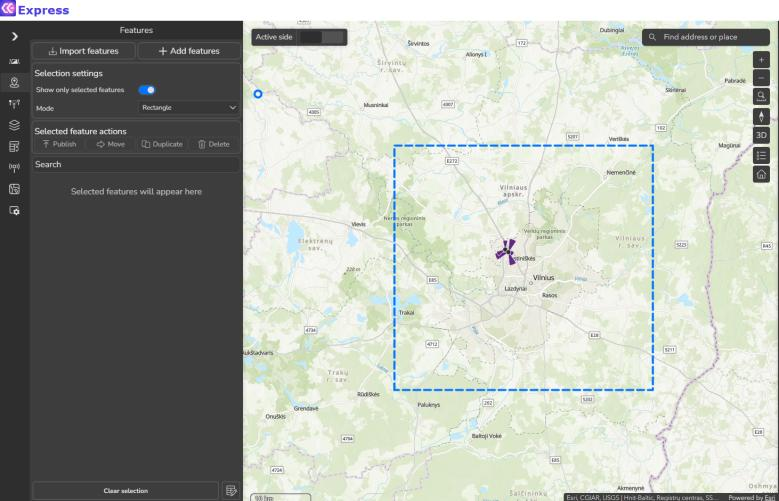
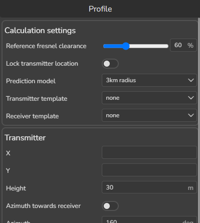
4.2 Step 2 – Profiling (Point-to-Point Analysis)
4.2.1 Selecting the Transmitter and Receiver 1. Find the cell with Cell Name: Cx002. 2. Zoom to its location on the map. 3. Open the Profile tool.
To define the transmitter: - Hold the Ctrl key - Click on Cx002 on the map To define the receiver location: - Enter coordinates manually: o X: 25.233984785 o Y: 54.735268085 The profile view and calculated results are displayed immediately. The graphical profile shows terrain, obstacles, and the signal path between the two points. Color indicators: - Green – Clear line of sight - Yellow – Obstruction caused by vegetation - Red – Obstruction caused by terrain or buildings This visual representation allows quick assessment of whether visibility can be established.
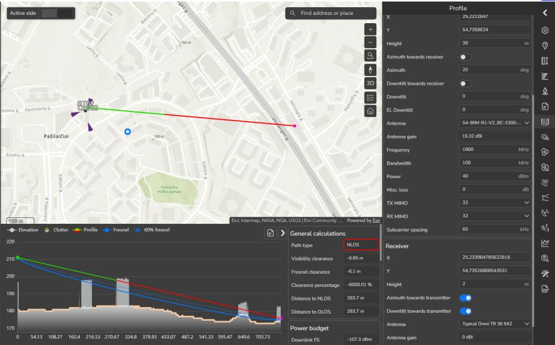
4.2.2 Exploring Profile Calculation Tabs The Profile tool provides several result sections:- General – Summary of path characteristics
- Power Budget – Transmit and receive power balance
- Path Loss – Signal attenuation along the path
- Angles – Vertical and horizontal angles between points Each tab offers additional context for understanding the profile outcome. 4.2.3 Exploring Parameter Sensitivity Parameter sensitivity analysis helps users understand how changes in input values influence visibility results. Instead of treating calculations as fixed outcomes, this step encourages
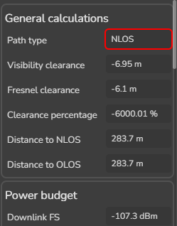
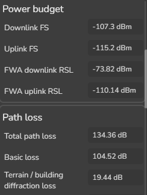
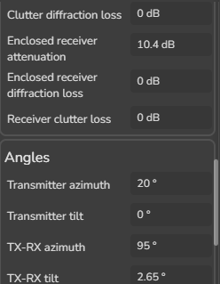
exploration and comparison, making it easier to understand cause-and-effect relationships. In CE Express, the Profile tool recalculates results automatically and instantly when key parameters are modified. This allows users to test different scenarios without repeating the setup process. 4.2.3.1 Transmitter Power - Increase Transmitter Power from 40 to 43 - Observe how signal-related results are updated automatically Changing transmitter power helps illustrate how stronger or weaker signals affect the overall path conditions and calculated results.4.2.3.2 Receiver and Transmitter Heights - Change Receiver Height from 2 to 20 Height is one of the most influential parameters in visibility analysis. Increasing height can:
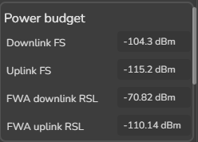
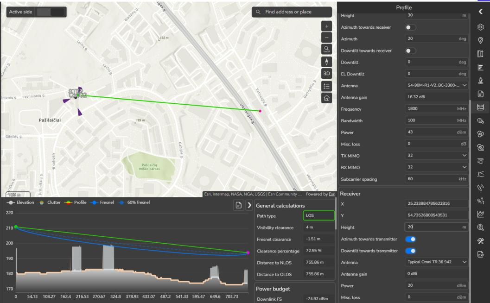
- Reduce the impact of terrain and obstacles - Improve clearance over buildings or vegetation - Change the visibility status from obstructed to visible This step helps users understand why height selection is critical in many real-world scenarios.4.2.3.3 Frequency - Change Frequency from 1800 to 700 Different frequencies interact with the environment in different ways. Lower frequencies
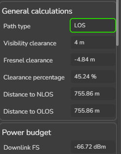
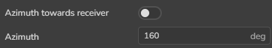
generally: - Are less sensitive to small obstacles - Provide better diffraction over terrain - Result in different clearance and path characteristics Observing these changes helps users understand how frequency choice affects visibility outcomes. 4.2.3.4 Other parameters Experiment with additional parameters available in the Profile tool, such as: - Antenna orientation and angles - Environmental or model-related settings As parameters are modified, the profile updates immediately, allowing users to: - Compare scenarios side by side - Identify which parameters have the strongest impact - Build intuition about environmental and configuration dependenciesThis interactive exploration is a key part of understanding visibility analysis and interpreting
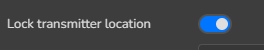
results with confidence. 4.2.4 Profiling with fixed transmitter location Profiling with a fixed transmitter location allows users to systematically explore visibility conditions from a single source point to multiple potential receiver locations. This mode is especially useful when the transmitter position is known or fixed, and the goal is to understand how visibility changes across the surrounding area. By locking the transmitter, users can focus on: - Comparing multiple receiver locations quickly - Identifying directions with favorable or unfavorable visibility - Understanding how terrain and obstacles influence different paths 4.2.4.1 Enabling Fixed Transmitter Mode 1. In the Profile tool, enable Lock Transmitter Location. 2. The selected transmitter remains fixed on the map. As you move the mouse cursor: - A grey line dynamically shows a potential profile path- The path updates based on the cursor left click. 4.2.4.2 Exploring Receiver Locations
- Move the cursor across different areas of the map.
- Observe how the terrain profile preview changes along the grey path.
- When a point of interest is identified, left-click on the map to set the receiver location.
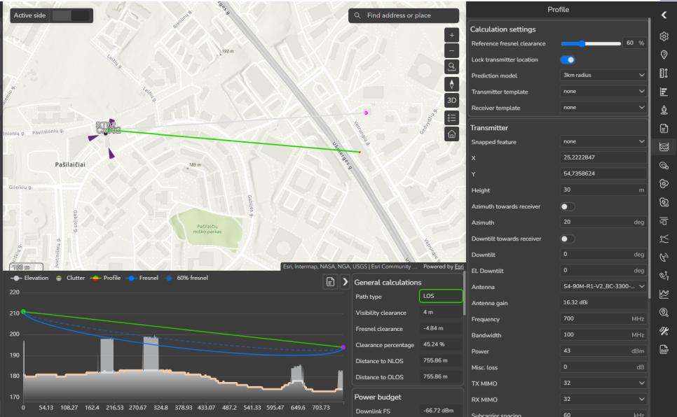
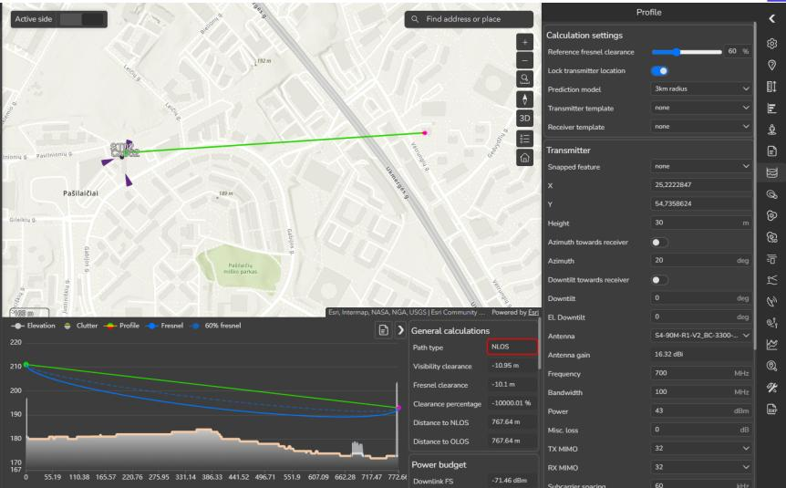
The profile is recalculated and displayed for the selected path.4.2.5 Profile Report 1. Click Generate Report in the Profile tool. 2. Define additional information and enable all report options.
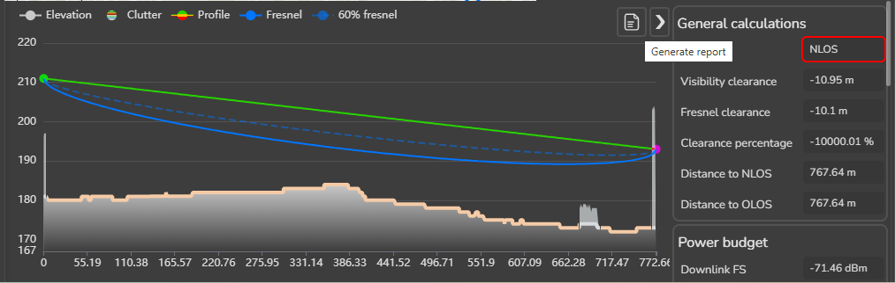
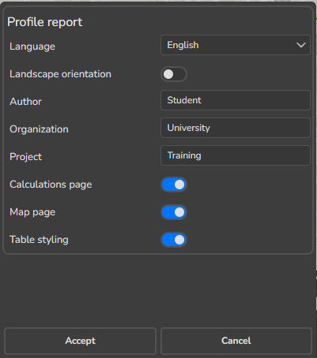
3. Click Accept. The report is generated automatically and downloaded.Reports can be used for documentation, presentations, or decision support. 4. Close the Profile tool.
4.3 Step 3 – Visibility Prediction (Point-to-Area Analysis)
Visibility Prediction extends the concept of line-of-sight analysis from a single path to an entire surrounding area. Instead of answering the question “Is this specific point visible?”,
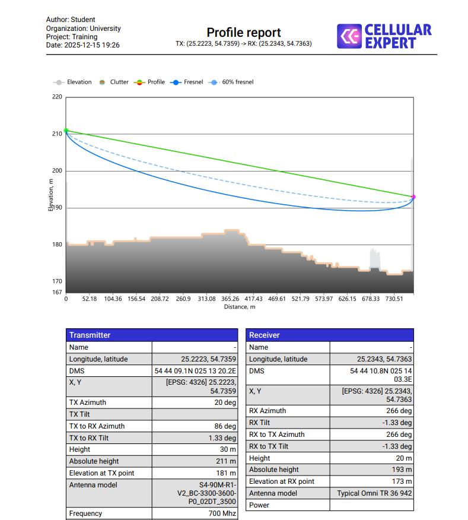
it helps answer “Which areas are visible, and under what conditions?” This type of analysis is particularly useful when exploring spatial feasibility, coverage potential, or environmental constraints over a broader region. Visibility prediction evaluates visibility between a fixed transmitter and many potential receiver locations within a defined radius, taking into account: - Terrain elevation - Buildings and man-made structures - Vegetation and clutter - Earth curvature and distance - Defined receiver height4.3.1 When to Use Visibility Prediction Visibility prediction is typically used when: - The area of interest is larger than a single point or path - Multiple potential receiver locations must be evaluated at once - Visual patterns and boundaries are more important than individual links - Early-stage feasibility or situational analysis is required Rather than manually checking many profiles, visibility prediction provides a comprehensive spatial overview in a single calculation. 4.3.2 Running Visibility Prediction Running a visibility prediction is the step where configuration choices are converted into a spatial visibility map. Careful definition of parameters is important, as each setting directly
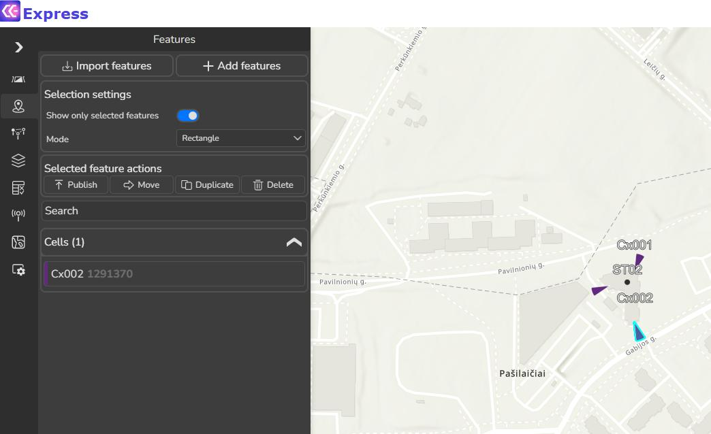
influences how the calculation is performed and how the results should be interpreted. Before starting the calculation, confirm that the correct transmitter object is selected and clearly visible on the map. Selecting the Transmitter 1. Locate the cell Cx002 on the map. 2. Ensure it is selected (highlighted).The selected object acts as the reference point from which visibility is evaluated in all directions. Opening the Visibility Prediction Tool 1. With the transmitter selected, open the Visibility Prediction tool. 2. The configuration panel appears, allowing definition of calculation parameters. This panel controls both the accuracy of the analysis and the scope of the evaluated area. Defining Calculation Parameters Set the following parameters carefully: - Resolution: 1 Defines the spatial resolution of the output grid. Smaller values produce finer detail and smoother boundaries but increase computation time. - Max Radius: 2 Defines the maximum distance (in kilometers) from the transmitter to be analyzed. This limits the calculation area and helps focus results on the region of interest. - Receiver Height: 1.5 Represents the assumed height of the receiving point above ground. - Effective Earth Radius: 8500 Adjusts how Earth curvature is considered in the calculation. This becomes more relevant as distance increases and helps ensure realistic geometric modeling. - Layer to Calculate: Cells Specifies which object layer acts as the transmitter source for the visibility calculation. - Template: Default
Starting the Calculation 1. Review all parameters for correctness. 2. Click Calculate to start the visibility prediction. A calculation progress window appears, indicating that the process is running. Depending on resolution, radius, and data density, the calculation may take several seconds.
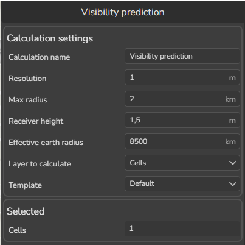
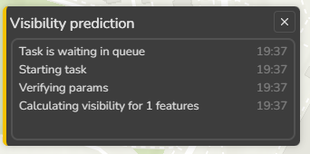
Accessing Calculation Results Once the calculation is complete: - Results can be opened directly from the progress window - Results are also stored and accessible via the Prediction History tool This allows users to revisit, compare, or reload previous visibility predictions without recalculating.Preview the results: Minimum Receiver Height – the receiver height in meters, which ensure visibility between transmitter and receiver. Line of Sight – Visibility condition, if value 1 – Visible, if value 0 – Not Visible. Clearance – Fresnel zone obstruction in meters, if value is negative – Fresnel zone is obstructed by X meters. Best Server – Cell Identification, which has highest Clearence value. 4.3.3 Visualizing Results on the Map Once a visibility prediction is completed, results are presented as map layers that visually describe visibility conditions across the analyzed area. Proper visualization is essential for
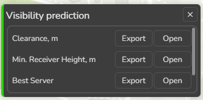
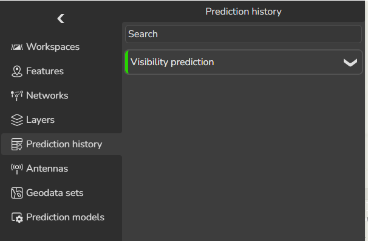
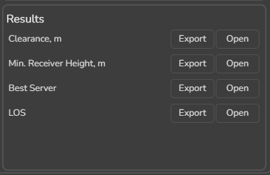
understanding patterns, identifying constraints, and communicating findings clearly.Loading Visibility Results 1. Open the Minimum Receiver Height result. 2. The result layer is automatically added to the map under Prediction Results. 3. Open the Layers tool to view all loaded prediction layers. Each visibility result is displayed as a raster or grid-based layer, covering the calculation area
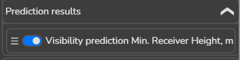
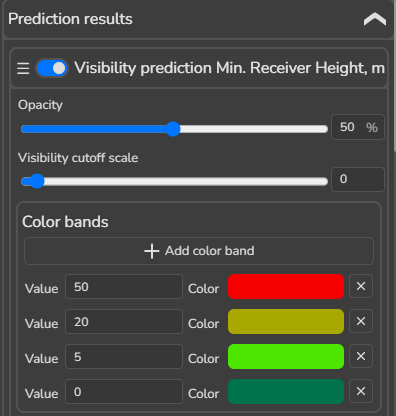
defined by the maximum radius. Understanding the Map Representation The map displays visibility information using color bands, where each color represents a specific range of values. For the Minimum Receiver Height result: - Dark green areas indicate locations where visibility can be achieved with a low receiver height (e.g. 0–5 m) - Lighter green areas indicate moderate height requirements (e.g. 5–20 m)- Yellow or red areas indicate increasingly challenging conditions, where higher receiver positions are required This representation allows users to quickly identify:
- Favorable areas with good visibility
- Marginal areas that require elevated positions
- Areas where visibility is difficult or impractical Working with Multiple Result Layers Visibility prediction produces several complementary result layers, such as:
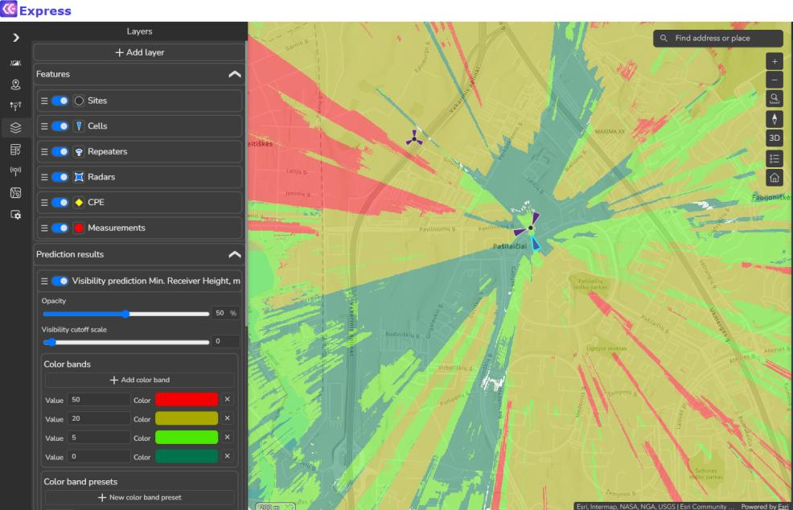
- Line of Sight - Clearance - Best Server Users can: - Toggle layers on and off to compare results - Overlay results with other map layers (buildings, terrain, objects) - Combine visual information to form a complete understanding of visibility conditions Customizing Result SymbologyUsers can adjust visualization settings: - Click on a color band to change its color - Click Add color band to create a new threshold - Click X to remove a threshold - Modify threshold values directly Custom symbology allows results to be tailored for analysis, reporting, or presentation needs.
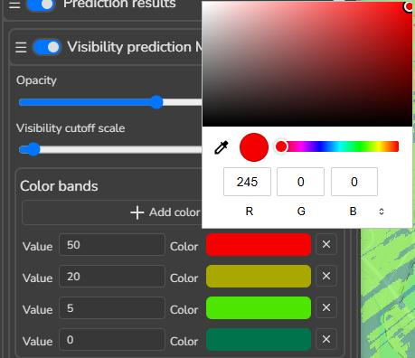
4.4 Step 5 – Combining Profile and Visibility Analysis
Profile analysis and visibility prediction are most powerful when used together. Each tool answers a different type of question, and combining them provides a deeper and more reliable understanding of spatial conditions. - Profile analysis explains why visibility exists or is blocked along a specific path - Visibility prediction shows where visibility is possible or limited across an area Using both tools together allows users to move from a broad overview to detailed, point- specific investigation. 4.4.1.1 Practical Workflow Example 1. Load the Minimum Receiver Height visibility result. 2. Identify an area displayed in red, indicating high receiver height requirements. 3. Open the Profile tool.
- Snap the transmitter to Cx002.
- Select a receiver point inside the red area. The resulting profile reveals:
- Where the path is obstructed
- Which objects or terrain features cause the obstruction
- How much clearance is missing This detailed view explains the visibility result observed on the map.
- Summary and Key Takeaways This module demonstrated how Line of Sight profiling and visibility prediction work together to provide a clear understanding of spatial conditions that influence connectivity and
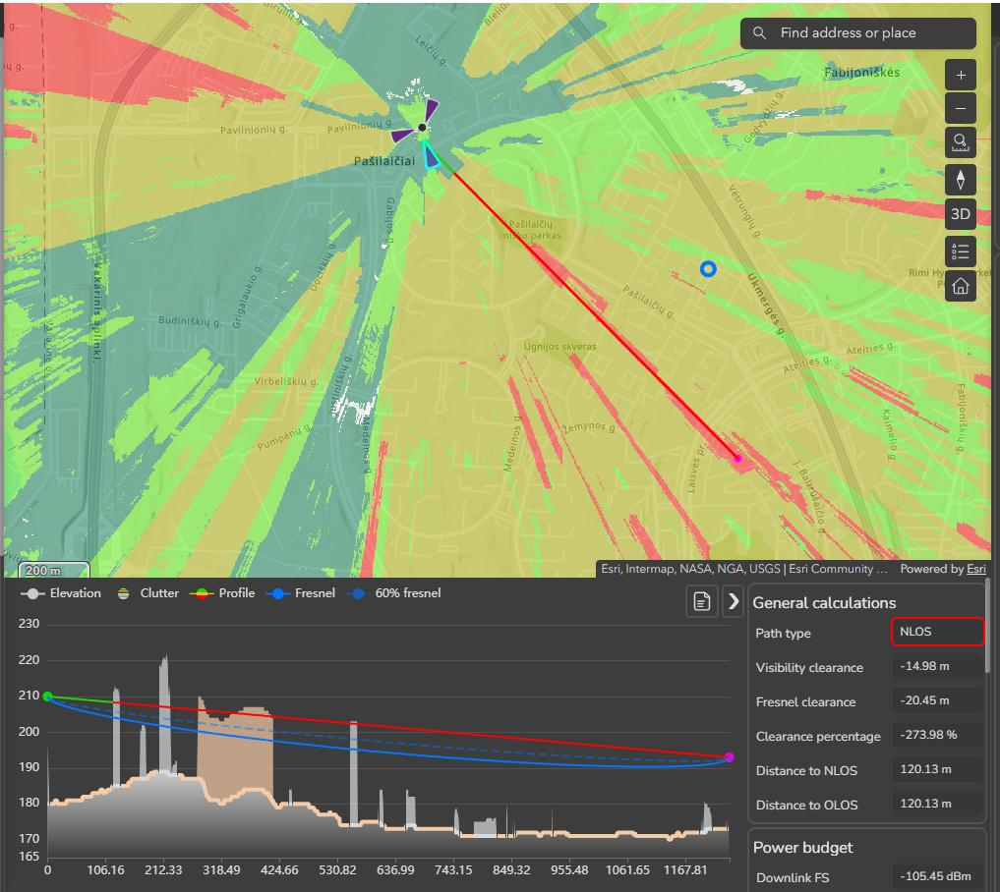
feasibility. Key points to remember:- Line of Sight (Profile) analysis is used to examine visibility along a single, specific path. It helps identify exactly where and why visibility is clear or obstructed.
- Visibility prediction extends this analysis to an entire area, allowing users to quickly identify favorable, marginal, and constrained zones around a transmitter.
- Parameter sensitivity exploration shows how changes in power, height, frequency, and other inputs influence results. This builds understanding of cause-and-effect rather than relying on static outputs.
- Fixed transmitter profiling enables fast, interactive exploration of multiple receiver locations from a single source point, supporting comparative analysis.
- Map-based visualization transforms complex calculations into intuitive visual outputs that are easy to review, explain, and present.
- Combining profile and visibility tools provides both overview and detail: o Visibility maps show where conditions change o Profiles explain why those changes occur Together, these tools support confident interpretation of spatial constraints, transparent communication of results, and well-informed decision-making based on terrain, environment, and configuration.